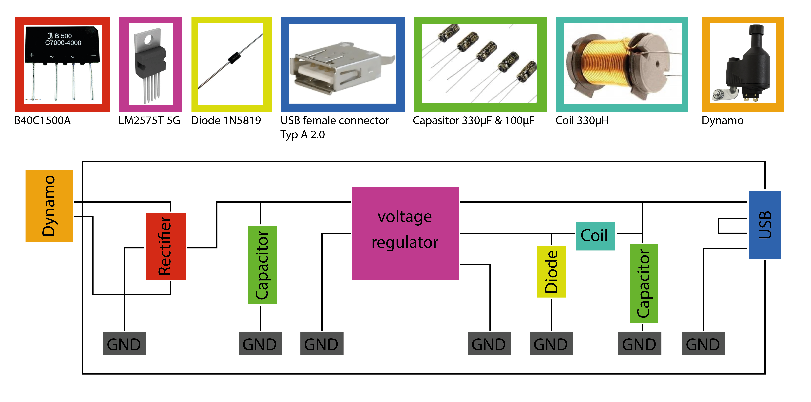
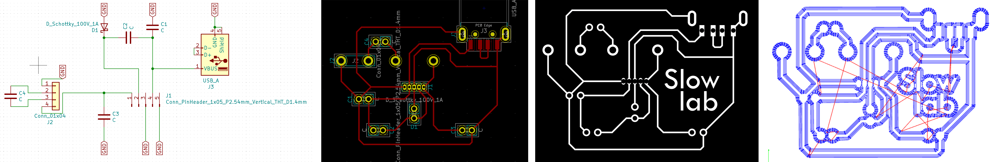
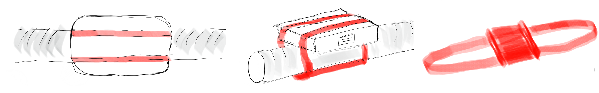

fabacademy
challenge 4
overview
Together with Audrey & Paula B and during our "Slowlab" community, we want to explore ways in which we can live a more resilient lifestyle and try to implement systems that are less dependent on fossil fuel energy. By approaching this subject we started experimenting with a Solar Oven to see if you could use the energy of the Sun to heat up our food instead of the usual microwave or oven. With this we try to start a slow movement in which we bring awareness to our everyday habits and embrace a slower pace with processes. This will pave the way to enjoy more the moment and eliminate the rush of our daily activities by giving time for things to transform.
Paula Small version of a solar oven to attach to any window and that rotates to follow the sun
Audrey Bike generator (static bike) for homes to power 12-24V devices at 175-350W. Clay printed wine cooler to refresh bottles using the principle of evaporation
Gerda (me) Generator of electricity on the bike to power a device. And a low tech navigation system which is connected to the phone through bluetooth.
concept & purpose
My idea was to build a generator, which produces energy through the dynamo so I can charge or provide 5V to one device through the USB connector. Then my idea was to make a low tech navigation system, which is connected with the phone through Bluetooth while using “OpenStreetMap”.
My main goal was to make biking more attractive and efficient, while reusing the paddling energy directly for different devices or charging them. Also sometimes you get distracted while checking your phone, why I want to build the low tech navigation system, and miss the way and the environment around you. So while using the distraction free navigation system, it could be more safe on the streets and let you focus more on the nature or city.
fabrication electronics
First I wanted to focus on building the generator and make it work and then start thinking about how to realise the navigation system including a intelligent bracket. I wanted to make it opensource, easy to replicate and use. Also final devices (generator and navigation system), should be waterproof and safely guide.
PCB design For the self-made USB charger I checked some tutorials to understand how people are building this, which components you need and how they are working. I checked the datasheets, bought the components and designed the Eschema in “KiCad”. I connected all the components with each other and created a circuit. Then I finished the PCB design while ordering the traces with the right footprints of the parts. After exporting it to a SVG file, I opened it in Adobe Illustrator to change the colours into black and white, inverted the traces and holes, so I will be able to create the g-code right and made three layers. Circuit inspiration Datasheet voltage regulator Datasheet bridge rectifier

PCB manufacturing/soldering In the online website “modsproject” I created three different g-codes, one for the traves, one for the holes and one for the outline (program, open program, machines, roland, srm-20 mill, pcb ce). Every layer/step has special speed and endmill. For the traces I used the endmill 1/64 and speed 3, for the outline I used the endmill 1/32 and speed 1.5 and for the holes I used the endmill 1/32 and speed 3. Also I changed the changed parameters at the coordinates: the specific speed value, origin: x/y/z: 0/0/0, jog Hight: 7 and home: x/y/z: 0/0/7. After exporting them into three separate RML files I milled first the traces, then the holes and then the outline while using the specific endmills. Then I soldered the components to the circuit board.
testing After finishing the fabrication and soldering I checked with the multimeter if all the connections between the components are working. Then I connected the dynamo after soldering extra cables to it. Mikel from FabLab and me first started checking how many V we are producing, with a driller, which was around 20V. But after testing it we realised the energy is not reaching the USB connector, which is the output. We found out the diode was sitting in the wrong direction. Also the voltage regulator was placed upside down. I understood that placing the components is very important. Also while soldering its important that the pins of the components and the coper traces has to be fully connected through the liquid metal. After replacing and resoldering some parts we made another test and could even light up a small LED, which worked. Then we were curious and tested to charge my Iphone 12 with the dynamo and Audreys stationary bike, which worked as well! So we know its producing enough V and A to charge a new smart phone.


build of materials In total I was using 9 components including the circuit board itself. A Dynamo (which is the electrivity input), a diode 1N5819 (which is leading the energy only in one direction), a USB Connector Typ A 2.0 which (which is the output and connects several devices), a bridge rectifier B40C1500A (which is converting AC from the dynamo to DC), a capasitor 330 µF and 100 µF (which are storing electric charge and the associated energy statically in an electric field), a voltage Regulator LM2575T-5G (which converts voltages to 5V) and a Coil 330µH (which are suitable for generating or detecting a magnetic field. They are electrical components or parts of a device).
fabrication case
For the case I thought about a small box around the circuit, which is holding the board to not move and is attachable to the bicycle. For the attachment to the bike I thought to use a rubber band, which is flexible and could be attached to different bike frame diameters. So that the rubber band is not moving I thought about integrating grooves in the case. I thought about 3D printing it. More information
future steps
Now I want to focus on designing the navigation system. Therefore I was reading other tutorials. I would like to include two sensors: a Accelerometer (If the cyclist crashes or falls, I can sense it and trigger an action as sending a SMS or call to emergency, which is good for solo adventures) and a Gyro, which is a movement sensor. Then I think I need to create my own app with the “Mapbox Navigation SDK”, which provides all the tools necessary to build a turn-by-turn navigation experience within an application. Then I can integrate the “OpenStreetMap”, which has wiki pages on iOS and Android applications using its maps. Bluetooth adaptor Inpiration
FABACADEMY